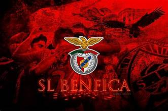

Início |
Títulos e vídeo
Sport Lisboa e Benfica

O Sport Lisboa e Benfica foi fundado em
28 de fevereiro de 1904, em Lisboa.
O clube joga no Estádio da Luz, inaugurado em 2003.
Datas importantes
- 1904 - Fundação do clube
- 1961 - Primeira Taça dos Campeões Europeus
- 1962 - Segunda Taça dos Campeões Europeus
- 2003 - Inauguração do novo Estádio da Luz
Modalidades
- Futebol
- Basquetebol
- Andebol
- Futsal
- Hóquei em patins
- Voleibol
Para saber mais visita o
site oficial do Benfica.